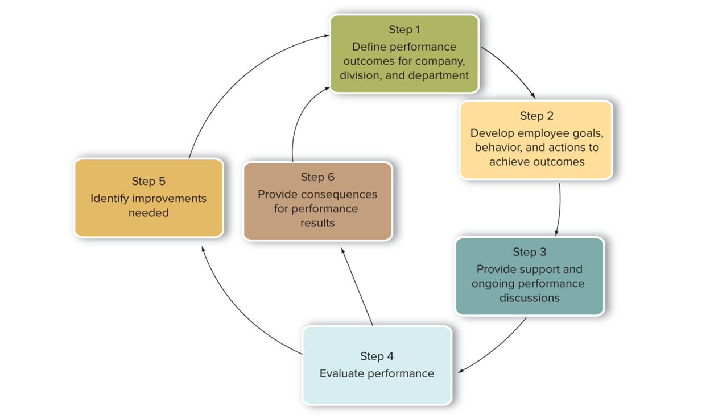

Peformance Management Process
Six Steps in the Performance Management Process

- Define performance outcomes for company, division, and department.
- Develop employee goals, behavior, and actions to achieve outcomes.
- Provide support and ongoing performance discussions.
- Evaluate performance.
- Identify improvements needed.
- Provide consequences for performance results.